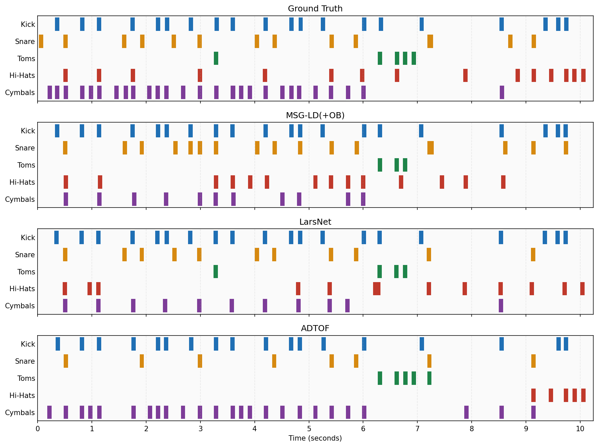
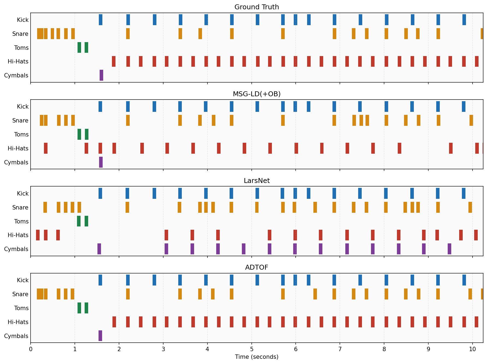

Automatic Drum Transcription (ADT) is commonly formulated as a direct mapping from a music mixture to symbolic drum events. While effective for transcription, this formulation discards the acoustic stems that are useful for editing, remixing, and production. We revisit an alternative separate-and-detect formulation, where a drum source separation front end first produces five editable drum stems, and a fixed onset detector then converts each stem into symbolic events. The separator is built on a five-stem latent diffusion model that jointly generates kick, snare, toms, hi-hats, and cymbals in a compact VAE latent space. We further study two training-only auxiliary branches-an onset branch (OB) and a timbre branch (TB)-which shape the separator during learning but are discarded at inference. Trained on synthetic drum multitracks and evaluated on MDB Drums and ENST-Drums, the proposed pipeline consistently improves over a strong U-Net-based drum separation baseline in overall transcription F1. It also outperforms a representative end-to-end ADT system on kick and snare F1 under our evaluation protocol, while additionally providing separated audio stems. The ablation results show that OB gives the most stable transcription gains, whereas TB changes the trade-off between reconstruction, perceptual stem quality, and onset detection. These results suggest that generative drum demixing can serve not only as a source separation model, but also as a practical front end for interpretable drum transcription.

Example 1 pianoroll visualization.
The testing set is a real acoustic drum kit recording dataset captured with eight microphone channels. In a real studio setup, the drum components are close to each other and produce high sound pressure levels, so microphone bleed / crosstalk is unavoidable. For example, a microphone placed near the snare can also capture nearby hi-hats and kick sounds. Therefore, hearing other drum components in a single ground truth stem is expected and does not indicate an error in the demo samples.
The demo contains two types of audio examples. Separated stems show the editable audio outputs produced by each separation front end. Rendered transcription audio is synthesized from detected onsets using fixed one-shot drum samples, and is intended to make symbolic transcription errors easier to hear.
Rendered audio is generated by taking one-shot drum samples from StemGMD and rendering them according to the current transcription result. The ADTOF audio below is also rendered in the same way.

Example 2 pianoroll visualization.
Rendered audio is generated by taking one-shot drum samples from StemGMD and rendering them according to the current transcription result. The ADTOF audio below is also rendered in the same way.